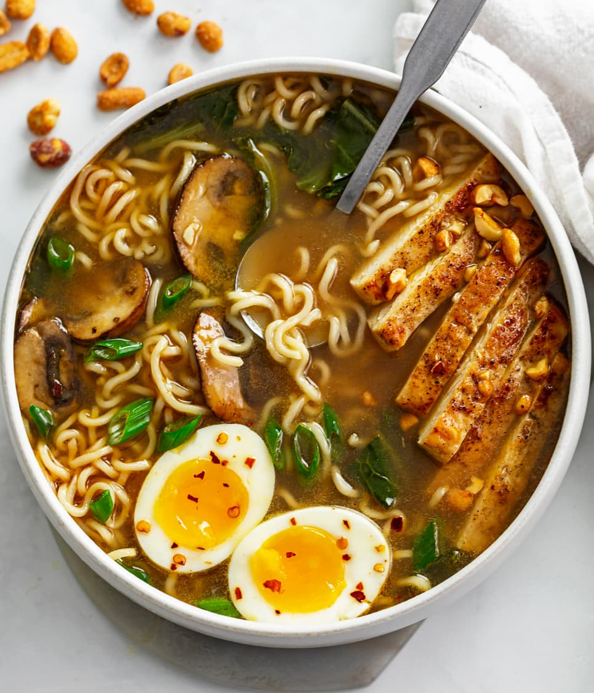

Ramen

There is nothing cozier or more soothing to the soul than a warm bowl of Homemade Ramen.
You'll never use a flavor packet again once you try this protein-packed, flavorful, brothy, noodle soup.
Ingredients
\
Mushrooms & Chicken
- 2 tablespoons olive oil, divided
- 2 tablespoons butter, divided
- 8 oz. mushrooms
- 1 large boneless/skinless chicken breast, about ¾ lb.
- Salt/Pepper
Soup
- ½ cup dry white wine
- 1 tablespoon butter
- 3 cloves garlic, minced
- 6 cups low sodium chicken broth
- 2 tablespoons low sodium soy sauce
- 2 teaspoons hot sauce
- 2 teaspoons honey
- ¾ teaspoon toasted sesame seed oil
- 2 (3 oz.) packets instant Ramen noodles, don't use flavor packet
- 6 leaves Bok Choy, roughly chopped
Seasonings
- ¾ teaspoon EACH: onion powder, mustard powder
- ¼ teaspoon ground ginger
- 1/8 teaspoon white pepper
- 1 pinch red pepper flakes
Serving
- Green Onions
- Roughly chopped honey roasted peanuts
- Soft boiled eggs
Instructions
- Heat 1 tablespoon olive oil and 1 tablespoon of butter in a large soup pot over medium-high heat. Add the mushrooms. Sauté until golden, about 4 minutes. Remove and set aside so that they retain the color, flavor, and texture.
- Slice the chicken in half lengthwise to create 2 thinner slices. Cover with saran wrap and use the textured side of a meat mallet to pound it to ½ inch thick.
- Pat the chicken dry and season each side with salt and pepper.
- Heat remaining olive oil and butter in a large soup pot over medium-high heat. Sear the chicken in batches for 4-5 minutes per side, until a golden crust has developed. Set aside turn the heat off. Let the chicken rest for 10 minutes, then cut into strips of desired size.
- Add the wine and set the heat to medium. Use a silicone spatula to “clean” the bottom and sides of the skillet. Let the wine bubble gently and reduce by half, 4-5 minutes.
- Add the butter and garlic and cook for 2 minutes.
- Add the chicken broth, soy sauce, hot sauce, honey, sesame oil, and soup seasonings. Bring to a gentle boil and let the broth reduce and concentrate for 10 minutes while you soft boil eggs for serving (see notes for instructions).
- Bring the soup to a more rapid boil, add the Ramen, and cook for 1 minute. Reduce to a gentle simmer and add the Bok Choy along with the cooked mushrooms and chicken. Simmer until the noodles are done, about 3 minutes.
- Transfer to serving bowls and top with green onions, roughly chopped peanuts, and a soft-boiled egg.